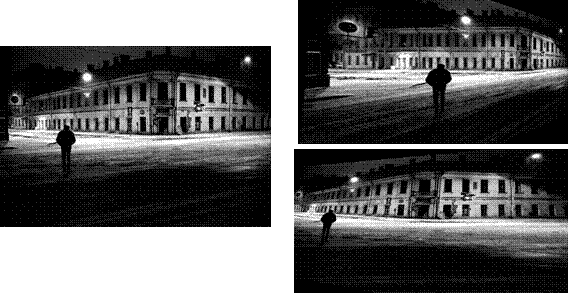
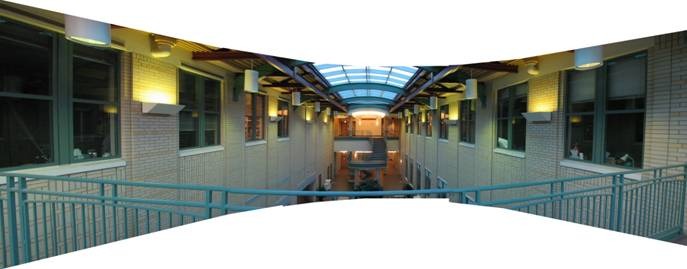

|
|
|
|
|
Programming Project #4 (proj4A) (first part) |



IMAGE
WARPING and MOSAICING
(first part of a larger project)
The goal of this assignment is to get your hands
dirty in different aspects of image warping with a “cool”
application -- image mosaicing. You will
take two or more photographs and create an image mosaic by registering,
projective warping, resampling, and compositing them. Along the way, you will
learn how to compute homographies, and how to use them to warp images.
The
steps of the assignment are:
- Shoot and digitize pictures
(20 pts)
- Recover homographies (20
pts)
- Warp the images (20 pts)
[produce at least two examples of rectified images]
- Blend images into a mosaic (20 pts) [show source images and results for three mosaics.]
- Optional Bells and Whistles (up to 0.5 cookie points from Part A and Part B each, for a total of up to 1 cookie point)
- Submit your results
There are some built in functions that are able to do much of
what is needed. However, we want you to
write your own code. Therefore, you are
not allowed to use the following functions in your solution: cp2tform, imtransform, tformarray, tformfwd, tforminv, and maketform, or their python equivalents. On the other hand, there are
a number of very helpful functions (e.g. for solving linear systems, inverting
matrices, linear interpolation, etc) that you are welcome to use. If there is a
question whether a particular function is allowed, ask us.
Shoot the Pictures
Shoot
two or more photographs so that the transforms between them are projective (a.k.a.
perspective). One way to do this is to shoot from the same point of view but
with different view directions, and with overlapping fields of view. Another
way to do this is to shoot pictures of a planar surface (e.g. a wall) or a very
far away scene (i.e. plane at infinity) from different points of view.
The
easiest way to acquire pictures is using a digital camera. Make sure to use the
highest resolution setting (important for homography calculation; you can
always downsample it later). Matlab’s imread can take most popular image formats; use unix convert for the more obscure ones.
We expect you to acquire most of the data yourself, but you are free to supplement the photos you take with other sources (e.g. old photographs, scanned images, the Internet).
We're not
particular about how you take your pictures or get them into the computer, but
we recommend:
- Avoid
fisheye lenses or lenses with significant barrel distortion (do straight
lines come out straight?). Any focal length is ok in principle, but wide
angle lenses often make more interesting mosaics.
- Shoot as
close together in time as possible, so your subjects don't move on you,
and lighting doesn't change too much (unless you want this effect for
artistic reasons).
- Use
identical aperture & exposure settings, if possible. On most
"idiot cameras" you don't have control of this, unfortunately.
It's nice to use identical exposures so that the images will have
identical brightness in the overlap region.
- You can use your smartphone camera, but please make sure the camera setting does not change. To do this, you can use exposure and focus locking (AE/AF) (e.g. in iPhone, you can press and hold to do this). You can also use a camera app. Please check the EXIF data of the photos once they are taken.
- Overlap the
fields of view significantly. 40% to 70% overlap is recommended. Too
little overlap makes registration harder.
- It's OK to
vary the zoom (change focal length) between pictures.
- If you're
shooting a non-planar scene, then shoot pictures from the same position
(turn camera, but don't translate it). A tripod can help in this,
particularly if objects are close.
Good scenes are: building interiors with lots of detail, inside a
canyon or forest, tall waterfalls, panoramas. The mosaic can extend
horizontally, vertically, or can tile a sphere. You might want to shoot several
such image sets and choose the best.
Shoot and digitize your pictures early - leave time to re-shoot in
case they don't come out!
Recover Homographies
Before you can warp your images into alignment, you
need to recover the parameters of the transformation between each pair of
images. In our case, the transformation
is a homography: p’=Hp, where H is a 3x3 matrix with 8 degrees of
freedom (lower right corner is a scaling factor and can be set to 1). One way
to recover the homography is via a set of (p’,p) pairs of corresponding
points taken from the two images. You
will need to write a function of the form:
H = computeH(im1_pts,im2_pts)
where im1_pts
and im2_pts are n-by-2
matrices holding the (x,y) locations of n point correspondences from the two
images and H is the recovered 3x3 homography matrix. In order to compute the entries in the matrix
H, you will need to set up a linear system of n equations (i.e. a matrix
equation of the form Ah=b where h is
a vector holding the 8 unknown entries of H).
If n=4, the system can be solved using a standard technique. However, with only four points, the
homography recovery will be very unstable and prone to noise. Therefore more than 4 correspondences should
be provided producing an overdetermined system which should be solved using
least-squares.
Establishing point correspondences is a tricky
business. An error of a couple of pixels can produce huge changes in the
recovered homography. The typical way of
providing point matches is with a mouse-clicking interface. You can write your own using the bare-bones ginput
function. Or you can use a nifty (but often
flaky). You can also use tools like Gimp or Photoshop to read off the pixel coordinates of the mouse cursor. cpselect. After defining the correspondences by hand,
it’s often useful to fine-tune them automatically. This can be done by SSD or
normalized-correlation matching of the patches surrounding the clicked points
in the two images (see cpcorr),
although sometimes it can produce undesirable results.
Warp the Images
Now that you know the parameters of the
homography, you need to warp your images using this homography. Write a
function of the form:
imwarped
= warpImage(im,H)
where im
is the input image to be warped and H is the homography. You can use either forward of inverse warping
(but remember that for inverse warping you will need to compute H in
the right “direction”). You will need to avoid aliasing when
resampling the image. Consider using interp2,
and see if you can write the whole function without any loops,
Matlab-style. One thing you need to pay
attention to is the size of the resulting image (you can predict the bounding
box by piping the four corners of the image through H, or use extra input
parameters). Also pay attention to how
you mark pixels which don’t have any values. Consider using an alpha mask (or alpha
channel) here.
Image
Rectification
Once you get this far, you should be able to
“rectify” an image. Take a
few sample images with some planar surfaces, and warp them so that the plane is
frontal-parallel (e.g. the night street examples above). You should do this before proceeding further
to make sure your homography/warping is working. Note that since here you only have one image
and need to compute a homography for, say, ground plane rectification (rotating
the camera to point downward), you will need to define the correspondences
using something you know about the image.
E.g. if you know that the tiles on the floor are square, you can click
on the four corners of a tile and store them in im1_pts while im2_pts you
define by hand to be a square, e.g. [0
0; 0 1; 1 0; 1 1].
Blend the images
into a mosaic
Warp
the images so they're registered and create an image mosaic. Instead of having
one picture overwrite the other, which would lead to strong edge artifacts, use
weighted averaging. You can leave one image unwarped and warp the other
image(s) into its projection, or you can warp all images into a new projection. Likewise, you can either warp all the images
at once in one shot, or add them one by one, slowly growing your mosaic.
If you
choose the one-shot procedure, you should probably first determine the size of
your final mosaic and then warp all your images into that size. That way you will have a stack of images
together defining the mosaic. Now you
need to blend them together to produce a single image. If you used an alpha channel, you can apply
simple feathering (weighted averaging) at every pixel. Setting alpha for each image takes some
thought. One suggestion is to set it to
1 at the center of each (unwarped) image and make it fall off linearly until it
hits 0 at the edges (or use the distance transform bwdist). However, this can produce some strange
wedge-like artifacts. You can try
minimizing these by using a more sophisticated blending technique, such as a
Laplacian pyramid. If your only problem
is “ghosting” of high-frequency terms, then a 2-level pyramid
should be enough.
If your mosaic spans more than 180 degrees, you'll need to break it into pieces, or else use non-projective mappings, e.g. spherical or cylindrical projection.
Tell us what you've learned
Whats the most important/coolest thing you have learned from this part?
Submit Your Results
You
will need to submit all your code as well as a webpage. Please remember to include a README with your code, describing where the various functions take place.
Bells & Whistles
- up to 0.5 cookie points from Part A and Part B each, for a maximum total of 1 cookie point.
- Your own ideas (N cookie points.): Be creative!
- Spherical/Cylindrical/polar mapping (0.06 cookie points): Instead of projecting your mosaic onto a plane, try using another surface, such as a sphere or a cylinder. This is often a better way to represent really wide mosaics. Be clever: do the inverse sampling from the original pre-warped images to make your mosaic the best possible resolution. Pick the focal length (radius) that looks good.
- Use 3D rotational model (0.1 cookie points): If your mosaic is a rotation about the same point and you don’t change zoom, you can use a simpler rotation-only transformation, which is more robust and requires less correspondences. This approach should also in theory help you find the focal length of your camera.
- 360 Cylindrical panorama (0.2 cookie points): Instead of a planar-projection mosaic, do a cylindrical projection instead. Perform a cylindrical warp on all your input images and stitch them together using translation only. This is one way to produce a full 360 degree panorama . The down side is that this method places more requirements on your camera (you need to know the focal length and radial distortion coefficients), and your data (the images have to be exactly horizontal – use a tripod).
- Video mosaics (0.14 cookie points): Capture two (or more) stationary videos (either from the same point, or of a planar/far-away scene). Compute homography and produce a video mosaic. You will need to worry about video synchronization (not too hard – a single parameter search). Also make sure that you shoot something where things are happening over short periods of time – video data gets really big really quickly. A good example would be capturing a football game from the sides of the stadium.
- Your own ideas (N cookie points.): Be creative!
Appendix
Video Processing: Processing video in Matlab is a bit tricky. Theoretically, there is aviread but, under linux, it will only
ready uncompressed AVIs. Most current
digital cameras produce video in DV AVI format.
One way to deal with this is to splice up the video into individual
frames and then read them into Matlab one by one. On the graphics cluster, you can do (some
variant of) the following to produce the frames from a video:
mplayer -vo jpeg -jpeg quality=100 -fps 30
mymovie.avi
Also
note that handling video is a time-consuming thing (not just for you, but for
the computer as well). If you shoot a
minute of video, that’s already 60*30=1800 images! So, start early and don’t be afraid to
let Matlab crunch numbers overnight.
Extracting camera parameters: For producing cylindrical or spherical mosaics, you will need to know more about your camera. The most important thing to know is the focal length f (in pixels, not mm). One way to obtain an educated guess about this value is to use the EXIF data field associated with images produced by most digital cameras. There are several programs for extracting EXIF data from a JPG image, such as this one. EXIF’s FocalLength gives you focal length in mm, so you will also need to know the pixel density (see FocalPlaneXResolution and FocalPlaneYResolution, but it’s usually in inches). Note that this is only an estimate (in reality, due to different lenses, etc each particular camera (even of the same model!) will have slightly different parameters.
Besides
the focal length, other useful things to know are the optical center of the
camera (for nothing better, assume it’s at the center of the image), and
the distortion coefficients of the lens, k1 and k2. As a very simple hack, take a picture with
lots of straight lines, hold k2=0 and try to find k1 that makes the lines in
the image straight.